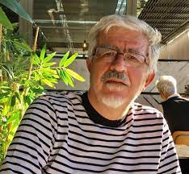

Gerçek her zaman göründüğü gibimidir?Metin Celal'in yorumuyla...
Essex’te yaşayan ve polisiyelere meraklı bir yazar olarak tanıtılıyor Eva Dolan. Önemli bir özelliği de iyi bir poker oyuncusu olmasıymış. Oldukça kısa bir biyografisi var. Kendi hakkında hemen hiçbir bilgi yok. Henüz ergenlik çağındayken Polisiye Yazarları Derneği tarafından yayınlanmamış yazarlar arasında kısa listeye seçilmiş. Bir dönem polisiye romanlar eleştirmenliği yapmış. 2014’ten itibaren Peterborough Nefret Suçları Birimi’nden iki dedektifin, Müfettiş Zigic ve Çavuş Ferreira’nın kahramanı olduğu serisinin romanlarını yayınlatmaya başlamış. Altı kitaba ulaşan serinin ilk romanları, Long Way Home ve Tell No Tales eleştirmenlerin beğenisini kazanmış. Tell No Tales, Yılın Polisiye Romanı dalında kısa listeye alınmış ve serinin üçüncü romanı After You Die, CWA Altın Hançer kategorisinde uzun listeye girmiş. Eserleri yabancı dillere çevrilmiş. Fransa’da ödüller kazanmış. “Böyle Bitti” sanıyorum Türkçede okuduğumuz ilk eseri. Müfettiş Zigic ve Çavuş Ferreira’nın kahramanı olduğu serisinin dışında tamamen farklı bir eser. Kitap “psikolojik gerilim” diye tanımlanmış.
Balahan Gürel’in Türkçeye çevirdiği “Böyle Bitti”, bir protesto gösterisi sırasında polisten dayak yemesinin ardından ün kazanmış bir aktivist olan doktora öğrencisi Ella Riordan’ın ve yakın arkadaşı, yine bir aktivist olan fotoğrafçı Molly’nin çevresinde gelişiyor. Londra yoğun bir kentsel dönüşüm yaşamakta yoksul ve dar gelirlilerin yaşadığı binalar yıkılıp lüks apartmanlara dönüştürülmektedir. Molly’nin yaşadığı apartman da aynı kaderle karşı karşıyadır. Apartmanda yaşayanlar Londra’da yeni bir ev bulmalarına yetmeyecek meblağlar ödenerek tahliye edilmektedir. Ella, apartmanın yıkılıp içinde yaşayanların başka şehirlere göç etmek zorunda kalmaması için bir dizi eylem düzenlemeye başladığında binanın üçte ikisi çoktan boşalmıştır.
Tahliyeye direnen ev sahiplerinden biri de Molly’dir ve Ella ile polis saldırısına uğradığı eylemde tanışır, hemen yakın dost olurlar. Molly onlarca yıldır protesto eylemlerini izleyip fotoğraflarla belgeleyen bir fotoğrafçı olmasının yanında sol ve feminist gelenekten gelen eski bir aktivisttir. Ella onun sayesinde birçok önemli aktivistle tanışacak, onlarla doktora tezini bahane ederek uzun görüşmeler yapacaktır.
Roman, Ella ve tahliyeye direniş eylemlerine destek veren arkadaşlarının katıldığı, binanın çatısında yapılan bir partiyle başlıyor. Parti sürerken Ella Molly’i çağırıyor ve boş bir dairede yatan ölüyü gösteriyor. Önceden tanımadığını söylediği adamın kendisini taciz ettiğini, tartışmaları boğuşmaya dönünce de adamı ittiğini ve başı çarpan adamın da yanlışlıkla öldüğünü söylüyor. Önderlik ettiği eylemler nedeniyle zaten kendisine diş bileyen ve sıkı takibe almış olan polisin masumiyetine inanmayacağı korkusuyla karşı karşıya kalan Ella, Molly’den yardım istiyor ve birlikte cesedi binanın asansör boşluğuna atıyorlar.
Molly’nin sevgilisi de olan bir komşunun, parti sırasında Ella ile koridordaki bir adam arasındaki tartışmaya kulak misafiri olduğunu söylemesiyle gerilim tırmanıyor ve iki kadın arasındaki dostluğu ve suç ortaklığını bitirebilecek bir şüphe ve güvensizlik ortamı oluşuyor. Ella’nın kendini aklamak için bazı gerçekleri gizlediği, bazılarını da çarpıttığını, asansör boşluğuna attıkları kişinin kimliğinin ve Ella ile bağının söylediği gibi olmadığını fark edince de bu genç kadının geçmişini merak ediyorlar. Ella’nın suç ortağı Molly ile arkadaşlıkları paylaştıkları karanlık sırla sınanıyor.
Roman iki kahramanı Ella ve Molly’nin bakış açılarından anlatılıyor ve geçmiş ve şimdi arasında gidip geliyor. Bu kronolojik olmayan yapı başlarda okuma güçlüğü yaratsa da yazar geçmişi ve bugünü ustaca birleştirip yarattığı yoğun gerilimle “Böyle Bitti” elinizden bırakamayacağınız bir suç romanı halini alıyor. Ancak sürprizli sona ulaştığınızda baştan beri olanları daha iyi anlıyor ve yazarın ustalığını takdir ediyorsunuz. Eva Dolan iyi bir pokerciden çok usta bir satranç oyuncusu gibi kurmuş romanını ve hiç boşluk bırakmamış.
“Böyle Bitti”, ahlakın, adaletin ve hayatımızda yaptığımız seçimlerin sonuçlarını araştırırken kentsel dönüşüm projesine, onlara karşı eylemlerin gelişimine odaklanarak toplumsal sorunların bireysel sorunlarla nasıl içiçe geçtiğini de gösteriyor.
“Böyle Bitti”nin gücü yalnızca sürükleyici olay örgüsünde değil, aynı zamanda Dolan’ın çok boyutlu karakterler yaratma becerisinde de yatıyor. Ella’nın evrimi hem ilgi çekici hem de düşündürücü.
Eva Dolan’ın “Böyle Bitti” adlı eseri onun polisiye kurgu türünde ustalığının bir kanıtı olarak duruyor ve diğer eserlerini merak ettiriyor. Umarım diğer eserleri de Türkçeye çevrilir.
“Böyle Bitti”, Eva Dolan, çev. Balahan Gürel, İş Bankası Kültür yay. Eylül 2023.